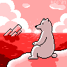
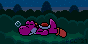
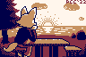
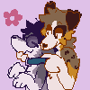
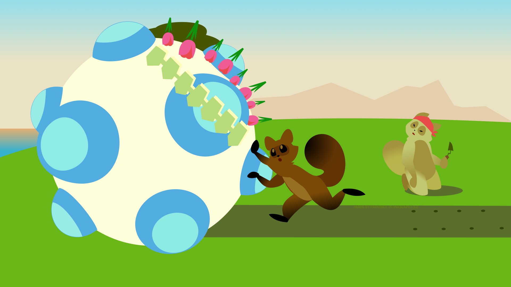
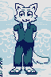

Hello. Welcome to my gallery. This gallery contains art I made; art I am just
barely pround of enough to deem "not a doodle."
Please zoom in to view in detail. Use Ctrl+ and Ctrl- to zoom in and
out.

Boxers |
|

Polarbear |
|

Yoshi |

Snow Fox |
|

Sunset |
|

Aaagh |

Funtime Foxy |

Mens Fashion Magazine |
|

Tanukatamari Damacy |

Punch Drunk |

Wolf Cig |
|

Me Standing |

Sahara, O Sahara |
|
Yep. Those were some of my artpieces. I consider illustration to divide itself
into two categories: "brief" and "involved." I also call these "scraps" and
"masterpieces." Not to say that all "masterpieces" are masterpieces! Haha.
|